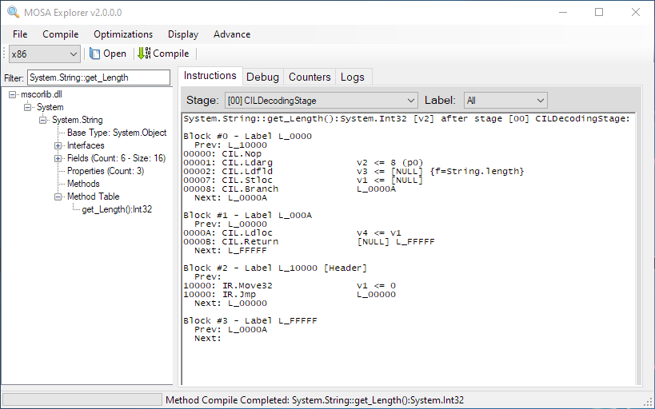

MOSA Explorer¶
The MOSA Explorer is GUI application used to visualize the compiler transformation of a method from the highest respresentation to the lowest, lowest level. The instruction stream at each stage can be viewed. In addition, specific stage logs is also available. in some cases, these logs describe why certain transforms were made.
The MOSA Explorer can be launched by executing Mosa.Tool.Explorer.exe.
In addition, the tool can be launched from the command line with arguments:
Mosa.Tool.Explorer.exe Mosa.HelloWorld.x86.exe
Command Line Options¶
See the command line arguments for a list of available options. Here are the most common options available: